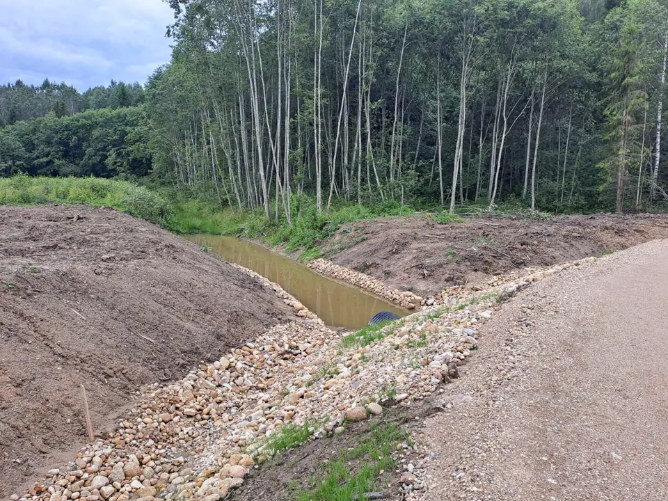
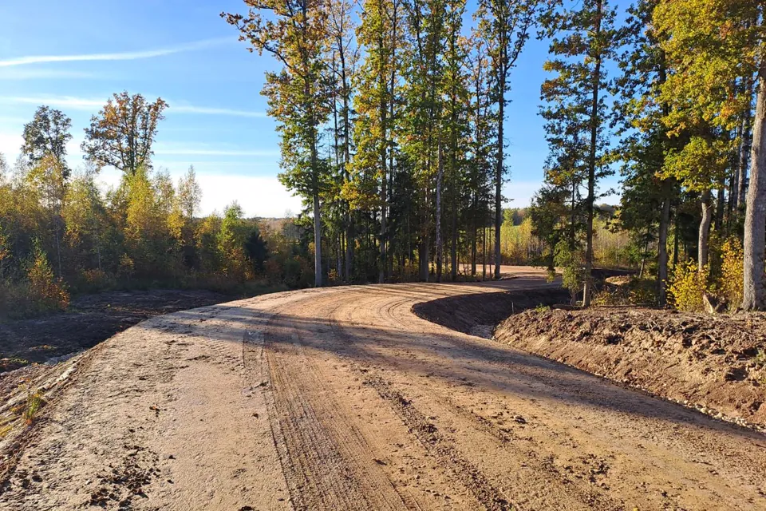
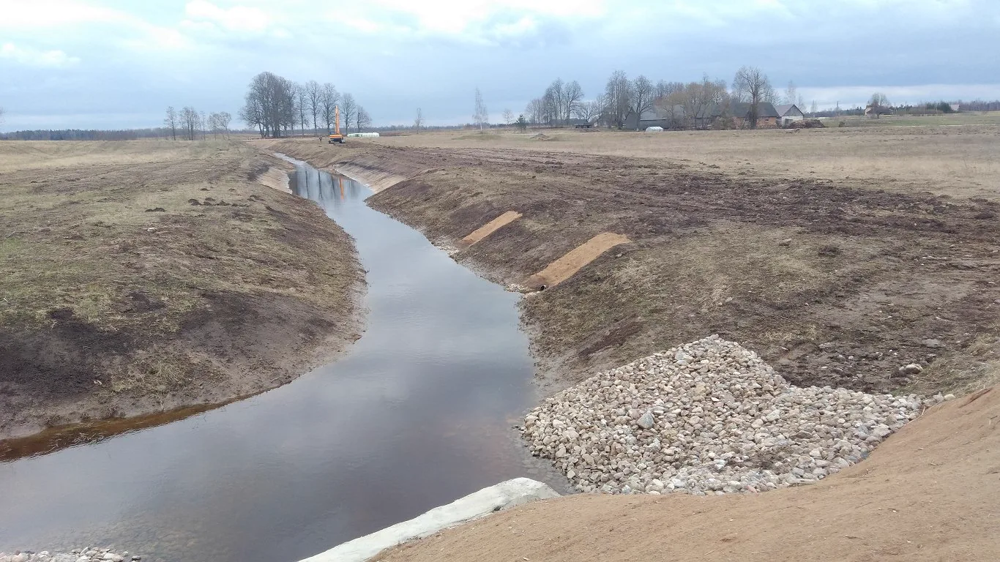

Pakalpojumi
Izvēlieties darbu, lai redzētu, ko tas ietver. Visus darbus veicam ar savu tehniku Auces apkārtnē, Dobeles novadā un Zemgalē.
 Meliorācijas sistēmu būvniecībaGrāvji, drenāža, caurtekas un bebru dambju nojaukšana.
Meliorācijas sistēmu būvniecībaGrāvji, drenāža, caurtekas un bebru dambju nojaukšana. Hidrotehnisko būvju būvniecībaCaurtekas, tilti, krastu un gultņu nostiprināšana.
Hidrotehnisko būvju būvniecībaCaurtekas, tilti, krastu un gultņu nostiprināšana. Grants un šķembu ceļu būvniecībaJaunu grants un šķembu ceļu būve.
Grants un šķembu ceļu būvniecībaJaunu grants un šķembu ceļu būve.- Ceļu seguma atjaunošanaProfilēšana, planēšana un materiāla papildināšana.
 Autoceļu uzturēšanaGreiderēšana, grāvju un nomaļu kopšana.
Autoceļu uzturēšanaGreiderēšana, grāvju un nomaļu kopšana. Ceļu ziemas uzturēšanaSniega tīrīšana un ceļu kaisīšana.
Ceļu ziemas uzturēšanaSniega tīrīšana un ceļu kaisīšana. Karjeru izstrādeGrants un smilts ieguve.
Karjeru izstrādeGrants un smilts ieguve. Bruģēšanas darbiLaukumi, piebrauktuves un celiņi.
Bruģēšanas darbiLaukumi, piebrauktuves un celiņi. Treilera pakalpojumiSmagās tehnikas pārvadāšana ar treileri.
Treilera pakalpojumiSmagās tehnikas pārvadāšana ar treileri. Transporta un tehnikas nomaTransports un tehnika ar vai bez operatora.
Transporta un tehnikas nomaTransports un tehnika ar vai bez operatora.
Mūsu darbi



Nezināt, kurš pakalpojums vajadzīgs?
Pieteikt apsekošanu
vai zvaniet +371 25 668 515